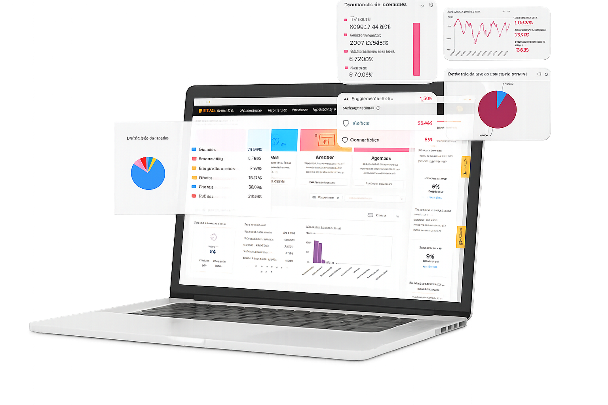

Relatórios de redes sociais manuais e fragmentados
Centralize dados de monitoramento, atendimento, performance, concorrentes e tendências, em uma ÚNICA plataforma. Tenha dashboards em tempo real e deixe a IA transformar dado em decisão.
Agendar Demonstração GratuitaDados fragmentados escondem o que sua marca precisa enxergar
Curtidas em uma plataforma, menções em outra, atendimentos em uma terceira e relatórios montados manualmente. Sem uma visão consolidada, padrões importantes passam despercebidos e as decisões acabam sendo tomadas com informações incompletas.
Isso dificulta entender o público, comparar resultados, justificar estratégias e identificar rapidamente o que está funcionando, ou o que precisa mudar.
Quando os dados não estão conectados, cada decisão carrega mais dúvida do que estratégia.
Todos os dados em uma única plataforma.
Para uma visão mais clara e decisões mais assertivas.
A Buzzmonitor reúne dados das redes sociais de todas as frentes da sua operação.
Assim, sua equipe deixa de cruzar planilhas e informações manualmente para acompanhar tudo em dashboards atualizados em tempo real.
E com inteligência artificial, a plataforma centraliza e analisa grandes volumes de dados, identifica padrões, mudanças de sentimento, tendências e oportunidades. E transforma tudo em insights claros para orientar as próximas decisões.

Centralize os dados da marca, do público e dos concorrentes
Automatize dashboards e relatórios
Interprete conversas e métricas com IA
Identifique tendências, riscos e oportunidades
Tome decisões mais rápidas e assertivas
Economize horas de trabalho manual e foque na estratégia
Menos tempo organizando dados.
Mais tempo usando os dados para gerar resultados.
A IA transformou a criação de relatórios!
A Buzzmonitor é pioneira em IA aplicada a social media e atendimento.
Nossos relatórios em tempo real e IAs transformam a rotina da sua equipe com análises ágeis, insights preditivos, automações que eliminam processos manuais massivos e recomendações inteligentes que orientam decisões mais precisas.
Dashboards ilimitados
Dashboards gerais sobre a marca ou específicos para campanha, concorrentes, crises e mais. Tudo atualizado em tempo real.
Buzz Pills
Relatórios periódicos com análises resumidas e insights acionáveis feitos por IA enviados direto no seu e-mail.
AI Insights
IA que analisa e grandes bases de dados e relatórios específicos em segundos com insights estratégicos.
Classificação automática
A IA define o sentimento e classifica posts por tipo de conteúdo, aplica tags e entrega relatórios detalhados.
Relatórios de produtividade
Tenha dados sobre o seu atendimento digital e a produtividade do seu time em tempo real.
Buzzmonitor Trends
A ferramenta aponta os temas em alta, sentimento do público, top posts e quem está falando sobre.
O que nossos clientes já conquistam com a Buzzmonitor
Redução de 33% no tempo de produção de relatórios
A Oi otimizou seus resultados operacionais com os AI Insights da Buzzmonitor.
Marca mais citada no maior reality do Brasil
A Betnacional usou os insights em tempo real da Buzz Pills sobre o programa para criar estratégias assertivas.
Centralização de 3 relatórios num só painel
A Prime Energy usou o Buzz Pills para parar de cruzar planilhas manualmente, substituir 3 relatórios e economizar horas.
Decisões mais estratégicas e baseadas em dados
A Camil Alimentos acelerou seus resultados com dashboards atualizados em tempo real.
Marketing, atendimento e social media não precisam discordar sobre o que aconteceu com a marca.
Três áreas, três leituras da mesma marca e uma decisão errada por falta de painel único.
Com Dashboards em tempo real, AI Insights e Buzz Pills, a Buzzmonitor junta essas leituras num retrato só.
Agende uma demonstração gratuita e leve as três áreas para a mesma tela.